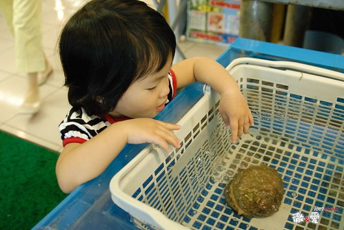
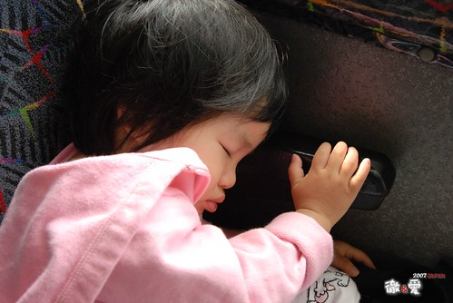

七天的旅行跑了很多地方 很累很趕…
但看到阿徹跟小愛的隨遇而安 享受遊玩 乖巧貼心…
即使再累作夢也會笑…
很充實 很安慰 很感動 很暢懷 甚至很驕傲的一趟旅行….
七天的遊記實在不知如何下手
加上最近工作開始進入旺季
還是先來個review文 好好回味阿徹跟小愛這幾天的可愛模樣吧
其餘的 就慢慢來吧~
PS. 大家可以多上flicker看徹爸寫的註解 給他動力完成這艱鉅的任務
(大人也跟小孩一樣很愛人”波”的)
小愛在整個旅行中的表現只有二句話形容”真是有夠愛玩 有夠適合玩 “
晚晚睡覺不會嚕 早早起床沒有下床氣
上車咻的123睡覺 下車咚的123精神百倍
能夠走的自己走 能夠吃的盡量吃
認真的享受這趟旅行…
甜美恬靜的形象擄獲每位同團阿嬤 阿姨 哥哥姐姐的心
有這兩個寶貝的旅行真的很棒 讓爸媽才剛回來又想帶著下一次的旅行了…
出發的那天小愛似乎就感受到出遊的興奮 很High
標準為了玩 衝衝衝的小女生~

膽子也不小(起碼比哥哥大很多) 讓爸媽反倒常腳軟 “挫勒蕩”

遇到喜歡玩的溜滑梯或事物 靈活俏皮的讓人想捏她小臉一把

端裝成熟的模樣 又讓爸媽很難相信不久前她還只是個剛出生的小猴子而已

兄妹倆打出生到現在從來沒有過可以這樣大口嗑冰
而且還3天內來了5隻這麼的密集
哈冰淇淋的模樣便又顯得稚氣十足 (學會了說”冰起領”..很可愛的語調)

紅嫩富有彈性的臉頰就像手上的水蜜桃一樣
戴上漁夫帽 真的挺有大明星避人耳目上街的架勢
“米您”是小愛最近的新歡&最愛
看到電視上或是Disney land的”米您” 總是手足舞蹈開心的大喊”米您”
其實她喊”米您” 時的可愛甜蜜模樣&聲音 更甚於”米您” 阿

大膽愛又不怕死的伸手一摸海膽(應該是海膽吧)

第四天越來越疲憊了
一大早上車後認份且把握時間的趕緊補眠
這一瞇就可以存儲夠”凍”到晚上的精力與體力

哥哥愛玩角色扮演 娃娃類的”粉味”遊戲
小愛卻是愛玩原本期望哥哥玩的車車類”陽剛”遊戲
倒底是星座上的差異(雙魚 vs. 射手)
還是個性上的天生不同亦或是老大與老二的差別ㄋ
真的很難理解….

吃到第五隻冰淇淋 哥哥吃了幾口便興致缺缺
只有小愛依舊高度亢奮的大口嗑著冰淇淋(沒有哥哥搶食 真難得真好)

白飯吃膩了就換喝牛奶嚕
一開始一天只有睡前一餐奶其餘跟著吃飯吃麵瞎吃
後來再好吃的日本白飯也吃膩了 牛奶終究成了整日營養的來源
不過還是得乖乖的陪吃飯…

到第六天其實一家四口都累斃了
但看到”米您” 看到城堡 遊行 表演… 心情還是興奮

今天的下午茶與晚餐就是爆米花吃到飽

小愛不客氣的獨自嗑掉半桶 (因為哥哥堅持的要找他的公主爆米花桶 )
餵飽肚子後卻也累的睡著了(小手還放在爆米花桶裡 真的是吃到睡著的)

最後一天還是鼓足力氣的前進上野動物園
雙下巴好像少了些 不過多了睡眠不足的水腫樣

提著小包包跟好媽媽阿…

旅行再好玩 還是想念自己的小床 家裡的味道
快了…就快回家了….帶著滿滿的回憶回家